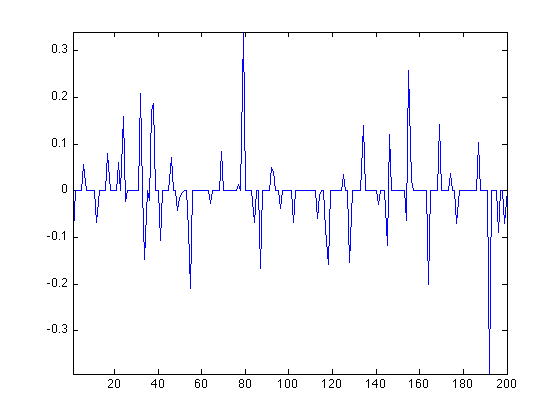
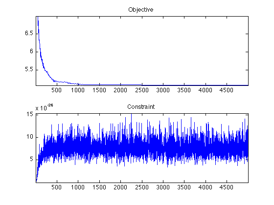

Basis Pursuit with Douglas Rachford
Test for DR algorithm for L1 minimization (BP). We do here a compressed sensing resolution (random matrix).
Add the toolbox.
addpath('../'); addpath('../toolbox/');
Dimensionality of the signal and number of measurements.
n = 200; p = n/4;
Sensing matrix.
A = randn(p,n);
Measurements.
y = randn(p,1);
We aim at solving
min_{A*x=y} norm(x,1)
This can be rewriten as the minimization of F(x)+G(x) where F=norm(x,1) and G=i_{A*x=y} is the indicator function.
The proximity operator of the L1 norm is the soft thresholding.
ProxF = @(x,tau)perform_soft_thresholding(x, tau);
The proximity operator of the indicator of A*x=y is the orthogonal projection on A*x=y.
pA = A'*(A*A')^(-1); ProxG = @(x,tau)x + pA*(y-A*x);
Create a function to record the values of F and the constraint at each iteration.
F = @(x)norm(x,1); Constr = @(x)1/2*norm(y-A*x)^2; options.report = @(x)struct('F', F(x), 'Constr', Constr(x));
Run the algorithm.
options.gamma = 5; options.niter = 5000; [x,R] = perform_dr(zeros(n,1), ProxF, ProxG, options);
[********************]
Display the solution. At convergence, it should be of sparsity p.
clf;
plot(x);
axis tight;
 Retrieve the F and constraint function values.
f = s2v(R,'F'); constr = s2v(R,'Constr');
Display.
clf; subplot(2,1,1); plot(f(2:end)); axis tight; title('Objective'); subplot(2,1,2); plot(constr(2:end)); axis tight; title('Constraint');